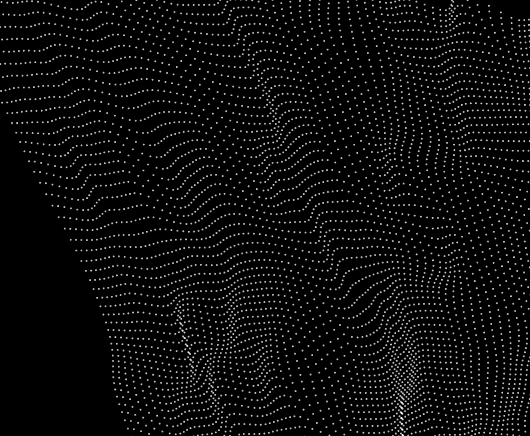
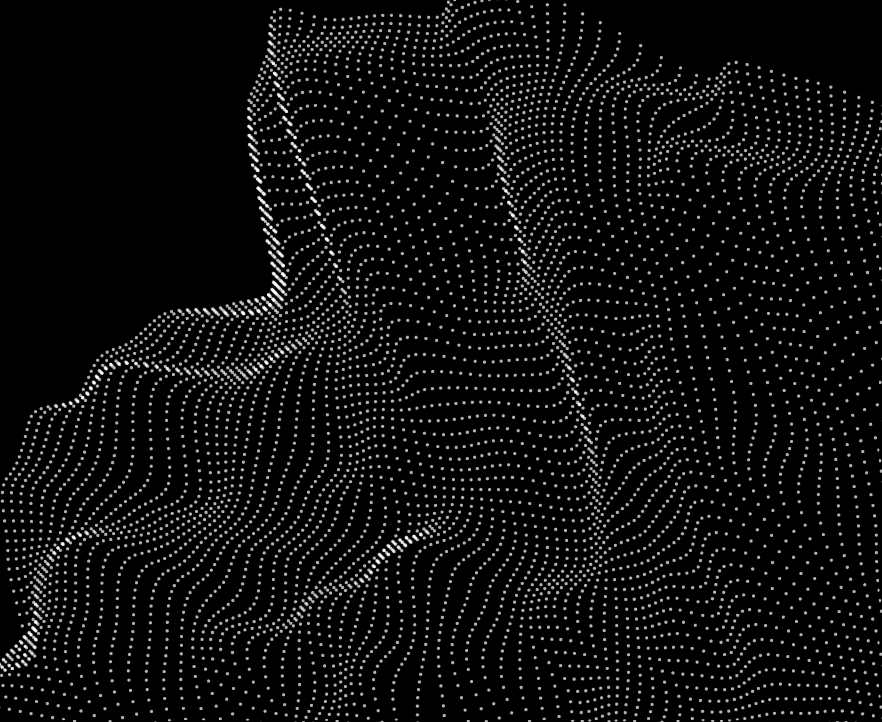
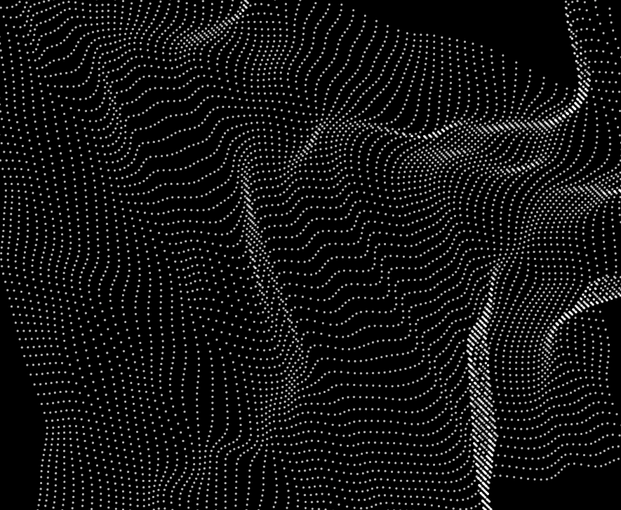
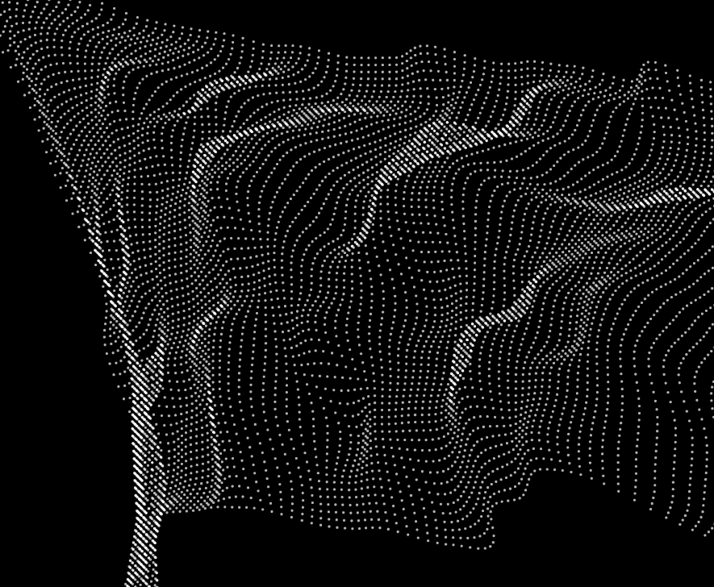
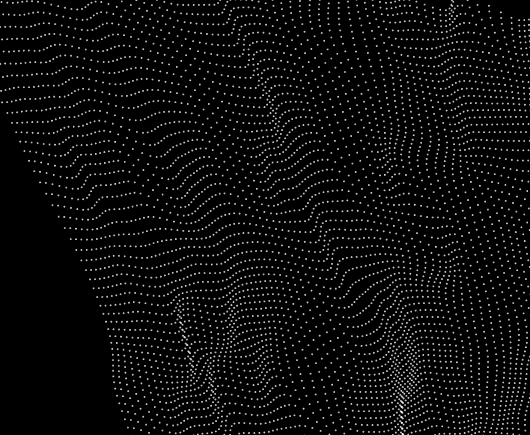
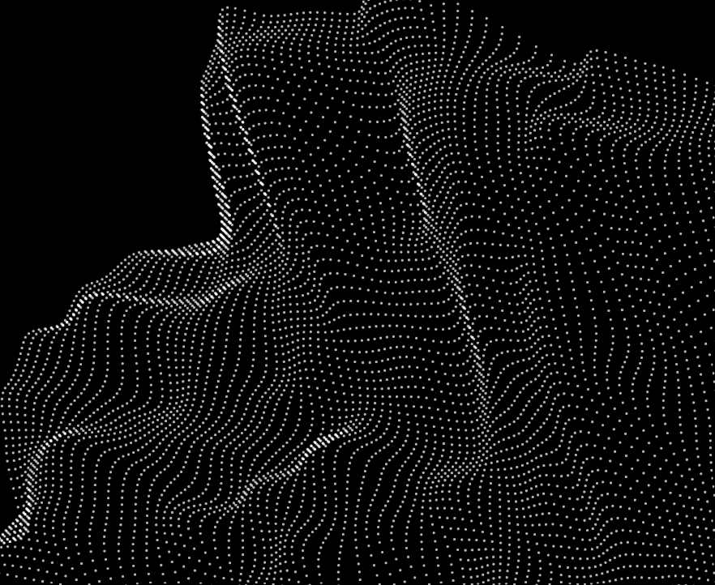
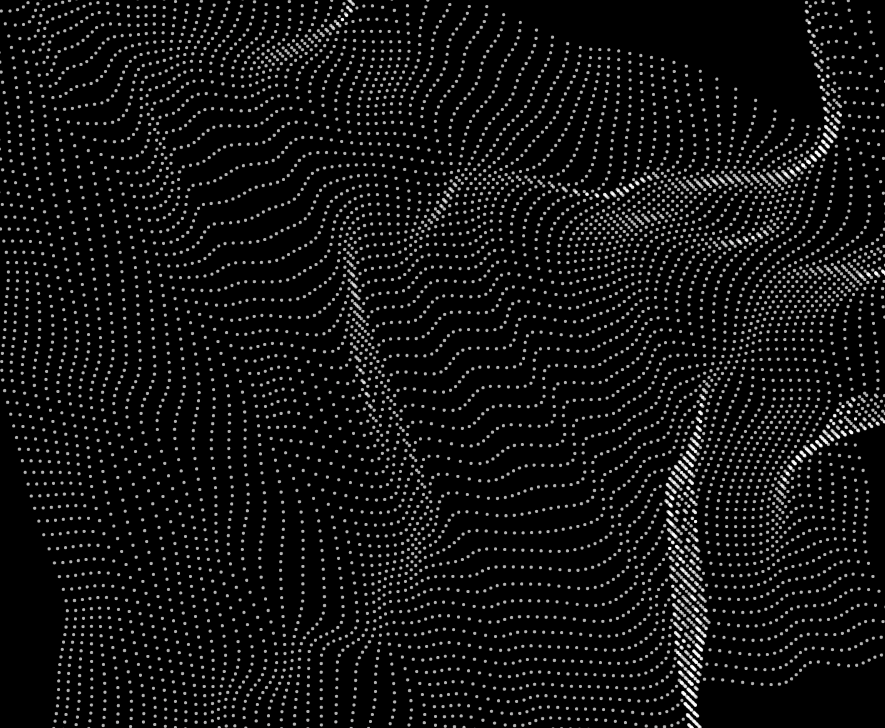
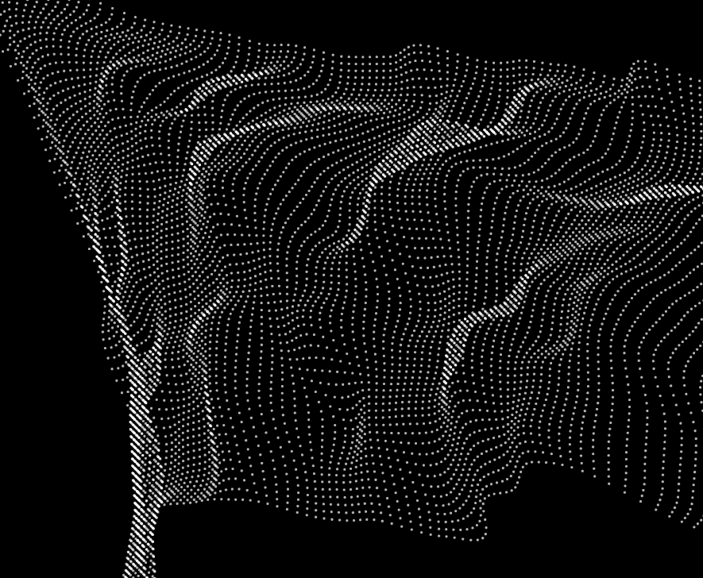
Here is how creative coding went for me!!
Keep scrolling to see whether or not i make it!!!
This is my friend loki (he does computer science)
This is me (on the brink of ending it all)
What is generative design?
Generative design is a fascinating field where code is employed to produce visual or auditory creations. In essence, they're pieces of design that were made on the computer but pretty much mainly through a gazillion lines of code. Or like, I don't know, twenty lines of code. Really depends on how ambitious you are. Oh - and we'll be using p5.js to do all that.
Me
Loki I am doing p5.js for my interactive media class
Have you heard of it before?
Loki
Yes actually, do you need help?
Me
Yes
Loki
Tell me what you know so far and I'll help where I can :3
In my first class about p5.js I learned that there are two main functions that I would be focusing on - the setup and the draw function.
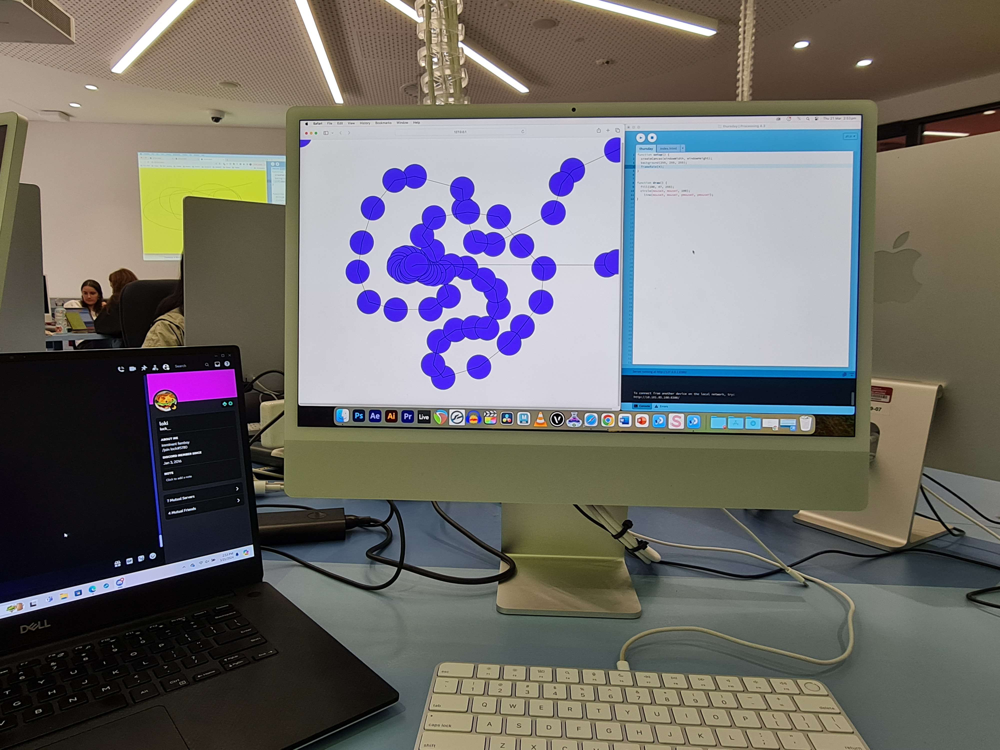The setup function runs once when your program starts. You can set up the screen size, background colour, media and other assests. It is the opening of the sketch and only happens once!
The draw function is sort of the opposite. while the setup functions runs once, the draw functions runsat 60 frames per second, meaning that it updates and doesn't stop unless you tell it to!
Here's an example of how I used that to make this portrait of my deskmate, Helena!
The setup function runs once and makes the canvas white.
The draw function makes a stroke (AKA, a black dot) on the page everytime the mouse is pressed. Since it updates 60 fps and saves the dot where it was, it allows me to draw a picture on the white canvas.
Loki
Woahh nice portrait
But yes, that's what that is in a nutshell
Me
Awww thank you
Loki
Did you use copilot?
Me
...
...yes
Loki
That is totally normal
Mess with the basics of that and you can come up with something interesting
Keeping that in mind, for my creative coding project I started tinkering with the tools that I had available to me. Trying drawing in the empty white space here!
I started by changing some bits from my basic sketch idea. Every frame makes the stroke a random colour, and everytime you press the mouse down the background colour changes and fades the past stroke.
To learn a little more about p5 though, I started focusing on just one bit: the setup function. And noise!
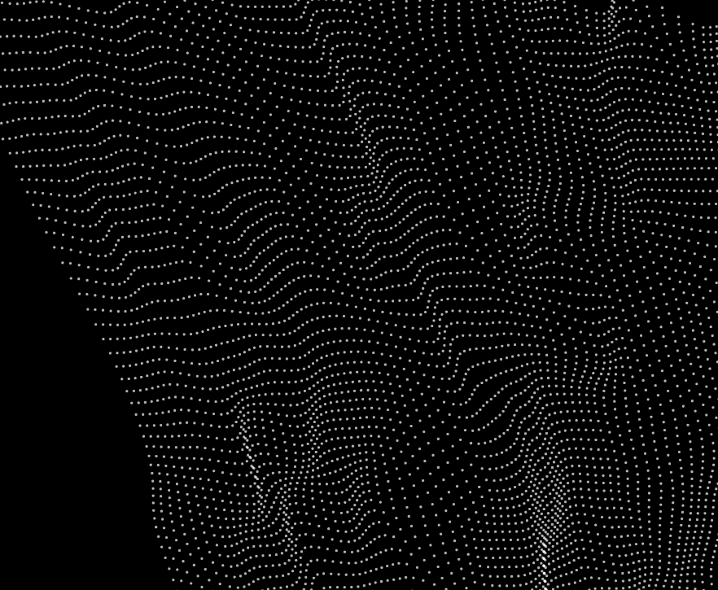
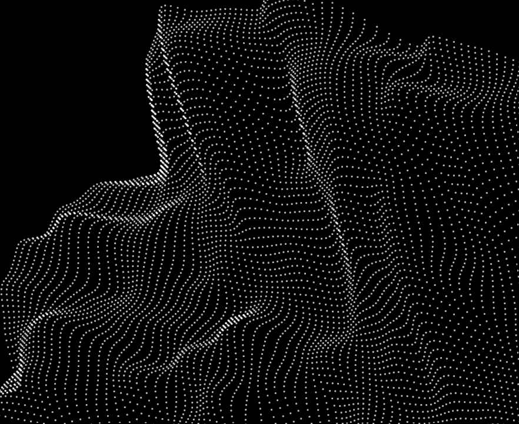
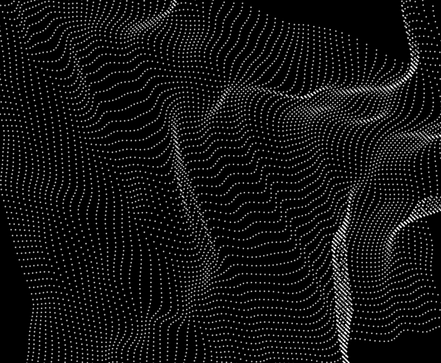
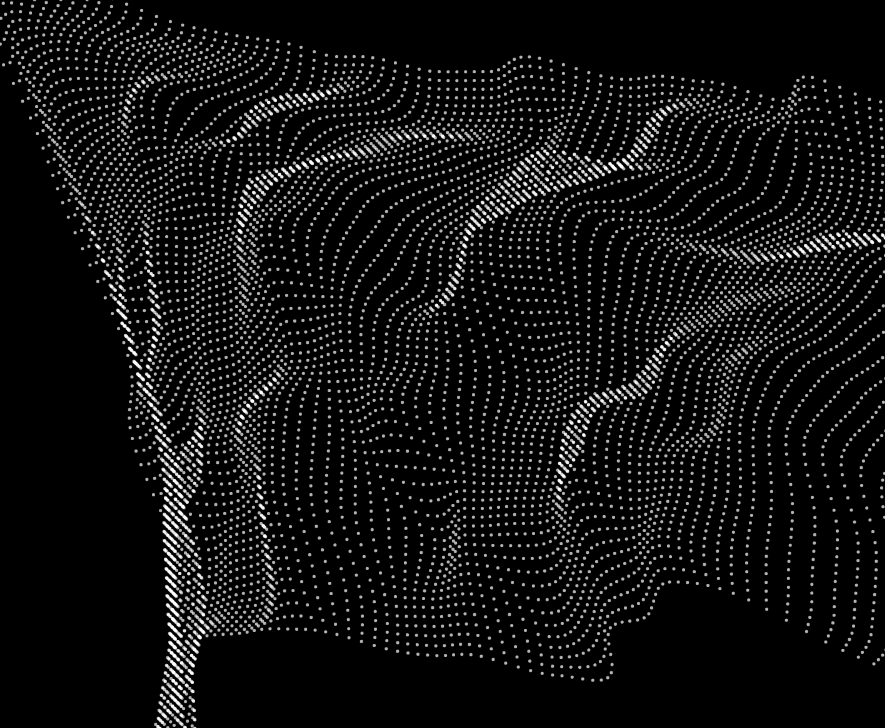
Noise/Perlin noise generates a semi-random value based on specific coordinates. In this specific example that I made, I offset the points by just a tiny bit to make a wave-like pattern. And if you move those points around the canvas and make them jitter about, you get an effect that makes your eyes feel itchy:
Loki was the one who figured out how to make them move, actually.
As much as I'd love to take credit for this, this was all him. Thank you, Loki!
You can take a gander here and generate your own special wave pattern (I could not figure out how to put it on this website, I am sorry)
In class, we talked about how we can group things into categories and that they can overlap and affect eachother. This resulted in trying to make venn diagrams which was so confusing that I cried after I left class! I had never felt more stupid in my life for not being able to grasp a concept that seemed so simple on paper! Yayyy!!!!
Me
Hey
What if I walk into oncoming traffic
Loki
Do not do that
Me
I'm really struggling in this class. I feel so stupid
Loki
Coding is kind of like that sometimes. Javascript is just stupid, don't worry
Loki ended up sending me a video that touched on some of the concepts I had learned in class in a way that I could sort of wrap my head around.
As well as an article talking about a way to explore those topics in a visible and interactive way.
In the video there was a cool example where they showed how you could make a glass cracking effect but didn't explain how to do so. So (with the help of Loki) I tried to come up with my own system to simulate a similar effect.
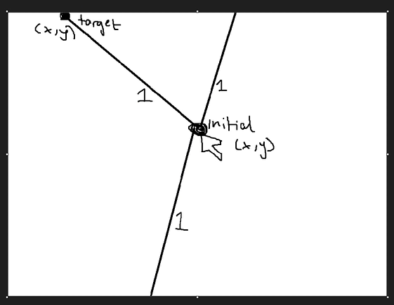
What we ended up coming up with was the following sets of rules:
1. When you press down the mouse, it creates an initial point.
2. The initial point branches off into three random targets.
3. These lines are labelled with the same group. For example: 1, 1 and 1.
4. Everytime the mouse is pressed, it runs those same functions but the group number increments by 1. For example, 2, 2 and 2.
5. When new lines are drawn, the code checks for an intersection on the most recent group of lines made.
6. If there no intersection, nothing happens.
7. If there is an intersection, the old target is deleted and the new target is replaced with the coordinates of the intersection to create the glass shattering effect.
This is what it looks like because I don't know how to attatch the sketch properly :c
Me
I did it :D
Well with your instructions of course you were a huuuuuge help
Loki
Awww np np it was all your ideas
Me
Can I put you in my website as a source?
Loki
Yes. Yes you may.